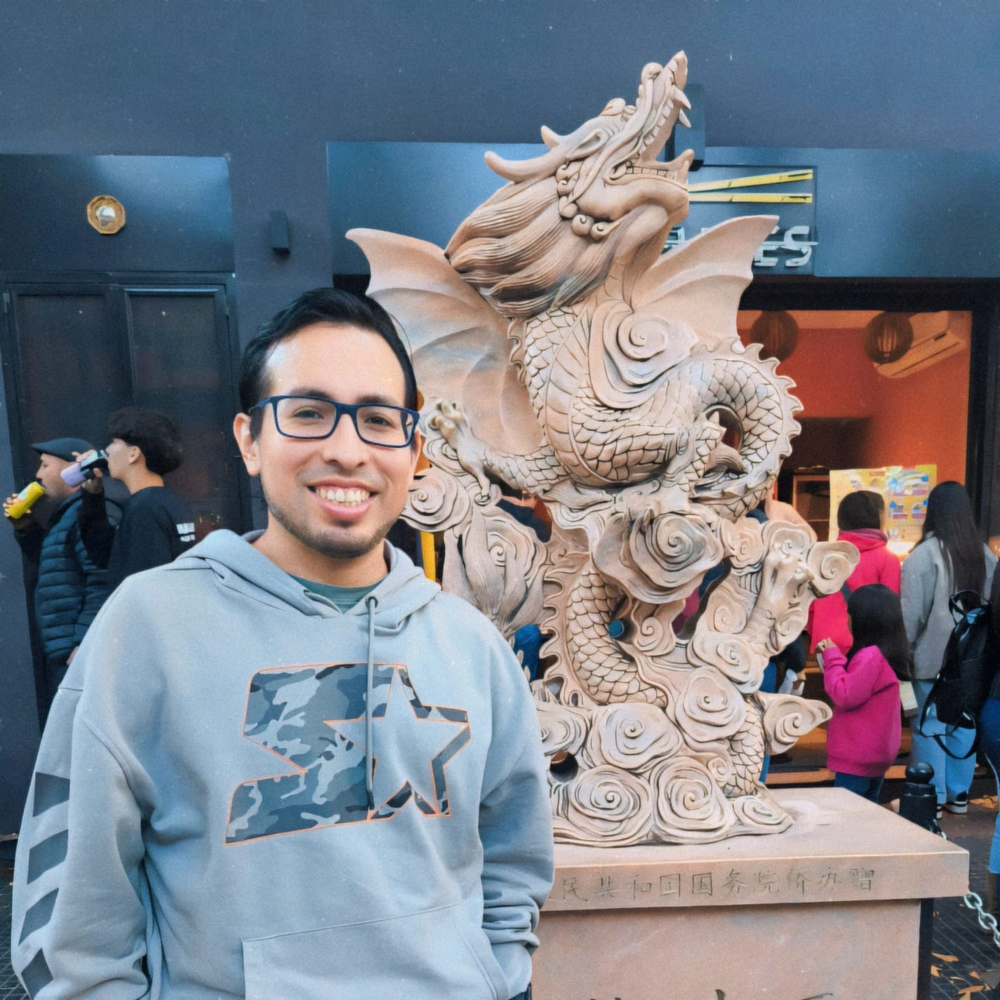

Contact
 📧 aaguirreb16@gmail.com 📞 +51 994 762 399 LinkedInTimeline
- 2019‑Present – Operations Analyst, National Migration Superintendency
- 2018‑2019 – Operations Assistant, Segurinvest Insurance Brokers
- 2017‑2018 – Operations Analyst, AVLA
- 2014‑2017 – Emission Assistant, La Positiva Life Insurance
Skills
Data Analysis · Process Automation · Project Management · Team Leadership · Effective Communication · Problem‑Solving · Critical Thinking